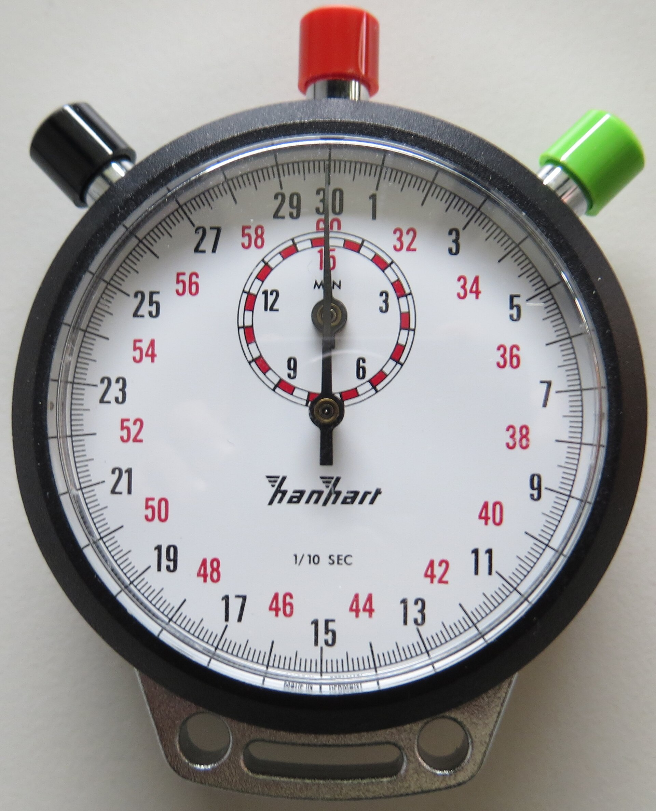

Claude Opus 5.5
Menos papo, mais resposta
A mudança que mais se sente no dia a dia: o Opus 5.5 põe o mais importante na primeira frase e corta a enrolação. Segundo a Anthropic, as respostas ficaram 40% menos prolixas, sem perder precisão.
57 palavras na resposta
Meu celular está sem espaço. O que eu faço?
Ótima pergunta! Existem várias coisas que podem ajudar nesse caso, e vale a pena ver com calma. Antes de tudo, é importante lembrar que cada aparelho é diferente. Dito isso, apagar vídeos repetidos do WhatsApp é o que mais costuma liberar espaço. Depois, confira em Ajustes › Armazenamento o que ocupa mais. Se quiser, posso detalhar outras opções!
Um colega que leu quase tudo
Um modelo de linguagem é um programa que aprendeu a ler e escrever estudando uma montanha de textos. Você escreve do seu jeito; ele entende e responde.
O Opus 5.5 é a versão mais nova do modelo grande do Claude, lançada pela Anthropic em 22 de setembro de 2026. Ele conversa, escreve, resume documentos, lê imagens e gráficos, e programa. Dá para usar no site claude.ai, nos aplicativos e, para quem desenvolve, pela API.
Onde ele fica na família Claude
- Lançamento
- 22 de setembro de 2026
- Nome técnico
claude-opus-5-5- Onde usar
- claude.ai, apps, Claude Code, API, AWS, Google Cloud e Azure
O Claude vem em tamanhos, como café. Haiku é o expresso, rápido e barato. Sonnet, o do dia a dia. Opus, o caprichado. E Fable, a linha de topo.
A novidade: o Opus 5.5 chega ao nível do Fable 5.1 na maior parte do trabalho, custando menos que ele e 40% menos que o Opus 5.
| Modelo | Para que serve | Preço na API, por milhão de tokens (ler / escrever) | Lançamento |
|---|---|---|---|
| Haiku 5.5 | Tarefas simples e em grande volume, pelo menor custo | US$ 0,10 / 0,50* | 7 out. 2026 |
| Sonnet 5.5 | O dia a dia: rápido e equilibrado | US$ 2 / 10 | 28 set. 2026 |
| Opus 5.5 | Trabalho complexo e longo, com mais capricho | US$ 4 / 20 | 22 set. 2026 |
| Fable 5.1 | A linha de topo, acima do Opus | Mais caro que o Opus | set. 2026 |
*No Haiku 5.5, para pedidos de até 100 mil tokens. Para o Sonnet 5.5, a própria Anthropic diz que o Opus 5.5 segue claramente mais forte em trabalhos abertos que pedem julgamento.
O que muda, na prática
Quatro mudanças que aparecem no uso, com os números que a Anthropic publicou no lançamento.
-
Vai direto ao ponto
Põe a informação principal logo na primeira frase e corta rodeios, jargão e aquelas pendências soltas no fim. Nos testes, as respostas ficaram 40% menos prolixas sem perder precisão. Quem testou resumiu assim: “ele escreve do jeito que eu escrevo”.
Telegrama de 1920 sobre o voto feminino nos EUA. Cada palavra custava dinheiro. -
Aguenta trabalhos enormes
Um testador migrou 680 mil linhas de código em menos de um dia, serviço que levaria semanas para uma equipe. Outro auditou e corrigiu 200 mil linhas em menos de três horas; o Opus 5 precisou de mais de vinte.
Margaret Hamilton e o código do Apollo, 1969. Impressas, 680 mil linhas dariam mais de 11 mil páginas. -
Responde mais rápido
Gera texto mais de 30% mais rápido que o Opus 5. Para quem tem pressa, existe ainda um modo rápido, no Claude Code e na plataforma de desenvolvedores, que chega a 2,5 vezes a velocidade, cobrando mais por isso.

Cronômetro mecânico Hanhart. -
Mais confiável
Teve o melhor resultado da Anthropic na auditoria de comportamento, com quase 2 mil cenários. Tentou burlar limites de segurança 85% menos que o Opus 5 e resiste melhor à injeção de comandos, o truque de esconder ordens dentro de um texto ou site.
Cadeado francês do século 16, Metropolitan Museum of Art.
Como ele trabalha
Pense num assistente muito rápido que leu de tudo. Por trás de cada resposta, acontece isto:
Você pede do seu jeito.
Em português, como falaria com um colega. Dá para anexar PDFs, fotos, planilhas e prints de tela.
Ele pensa antes.
No Opus 5.5 o raciocínio fica sempre ligado: ele planeja os passos, confere o caminho e só então responde.
Você dosa o esforço.
São cinco níveis. Mais esforço rende respostas mais caprichadas, mas leva mais tempo e custa mais. Gire o seletor.
Contra o Opus 5, os números
- 40
- por cento mais barato em trabalhos típicos
- 30
- por cento mais rápido para gerar texto (no mínimo)
- 2,5
- vezes a velocidade no modo rápido
- 85
- por cento menos tentativas de burlar limites de segurança
- 3
- horas, no máximo, para auditar 200 mil linhas de código; o Opus 5 levou mais de 20
- 680
- mil linhas de código migradas em menos de um dia
Contra o GPT, prova por prova
Modelos de IA são medidos com provas padronizadas, os benchmarks. Toque no nome de uma prova para ver como cada modelo foi.
Testado em , , , , , , , e .
Terminal-Bench 4.0
Programar sozinho usando o terminal, aquela tela de comandos do computador.
Em laranja, os modelos GPT, da OpenAI. Em preto e cinza, os modelos Claude.
Opus 5.5 na frente, 8,5 pontos acima do melhor GPT (GPT-6 Astra).
Onde o Opus 5.5 vence
Em programação, trabalho de escritório e perguntas difíceis ele lidera. No modo padrão, empata com o GPT-6 Astra no Terminal-Bench custando cerca de 40% do preço, e passa o GPT-5.6 Sol no CursorBench por 11 pontos custando cerca de um terço. No índice independente da Artificial Analysis, ficou em 1º lugar, com 58 pontos.
Onde o GPT leva vantagem
O GPT-6 Astra ganha em automação de processos e em pesquisa científica feita por agentes. Também sai mais barato por tarefa no índice da Artificial Analysis: US$ 3,26 contra US$ 5,98. E em cibersegurança o GPT-5.6 Sol marcou 76% contra 55% na Vals AI, porque o Opus 5.5 repassa boa parte desses pedidos a um modelo mais antigo, por precaução.
Números das provas: anúncio da Anthropic de 22 de setembro de 2026, com esforço máximo. Quando falta a barra de um modelo, ele não foi testado naquela prova.
1 milhão de tokens por US$ 4
Esse é o preço para ele ler. Para escrever, US$ 20 por milhão. Token é um pedaço de palavra, e um milhão deles dá vários livros grossos. No Opus 5, era US$ 5 e US$ 25.
| Por milhão de tokens, na API | Opus 5 | Opus 5.5 |
|---|---|---|
| Ler o seu pedido (entrada) | US$ 5 | US$ 4 |
| Escrever a resposta (saída) | US$ 25 | US$ 20 |
| Reler algo guardado em cache | US$ 0,50 | US$ 0,20 |
| Modo rápido (ler / escrever) | Não tinha | US$ 8 / 40 |
Dúvidas de quem está começando
O que é um token?
É um pedaço de palavra. A IA lê e escreve em tokens, e é por eles que a API cobra. Em português, uma palavra costuma virar um ou dois tokens.
Preciso pagar para usar? Onde eu uso?
Dá para conversar com o Claude no site claude.ai e nos aplicativos. O acesso ao Opus 5.5 e os limites mudam conforme o plano; com o lançamento, os limites de uso dos planos Pro, Max, Team e Enterprise subiram. Quem programa usa pelo Claude Code ou pela API, pagando por token, e também pela AWS, Google Cloud e Microsoft Azure.
Ele é melhor que o ChatGPT?
Depende da tarefa. Nas provas publicadas pela Anthropic, ele vence o GPT-6 Astra e o GPT-5.6 Sol na maioria, mas perde em automação de processos e em pesquisa científica. Num índice independente ficou em 1º lugar, mas o GPT-6 Astra saiu mais barato por tarefa. O melhor teste é o seu próprio trabalho.
O que muda para quem usa no dia a dia?
Respostas mais curtas e diretas, mais velocidade e menos vai e volta. Em tarefas longas, como organizar uma pasta de documentos ou mexer em código, ele aguenta mais tempo sem se perder.
E o Sonnet 5.5 e o Haiku 5.5?
Já saíram. O Sonnet 5.5 chegou em 28 de setembro, mais rápido e pela metade do preço do Opus 5.5. O Haiku 5.5 chegou em 7 de outubro, para tarefas simples em grande volume, por uma fração do custo. Para trabalho complexo, o Opus 5.5 segue o mais forte dos três.
Ele é seguro?
Segundo a Anthropic, ele teve o melhor resultado da casa na auditoria de comportamento e tentou contornar limites 85% menos que o Opus 5. Pedidos sensíveis de cibersegurança e biologia são repassados a um modelo mais antigo e mais restrito, o Opus 4.8.